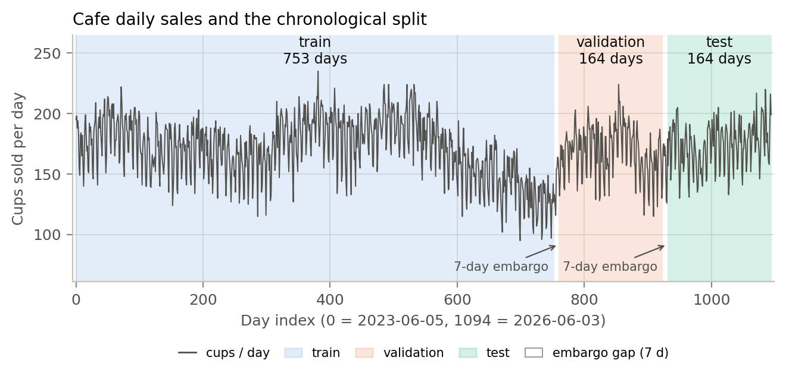
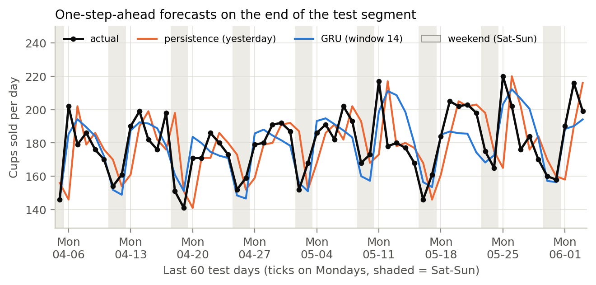
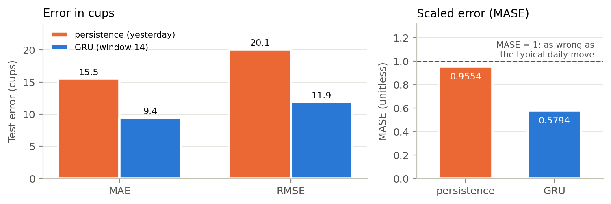

스켈레톤의 고정 조건(window 14, horizon 1, gap 7, GRU 32, 150 epoch, lr 0.01, 시드 42)은 그대로 두고 TODO 4개만 구현했다. 표준화 상수와 MASE 분모(naive_scale)는 학습 구간 753일에서만 구했고, 세 구간을 각각 따로 표준화·윈도우화해 embargo를 건너는 윈도우가 없게 했다. 그림 2의 주말 음영과 본문의 요일별 오차, 무작위 분할·seasonal-naive 비교는 csv의 date 열로 요일을 붙여 노트북과 별도 분석 스크립트에서 계산했다(제출 코드와 results.json에는 영향 없음).
Table 1. Both forecasters on the same test windows, one split, one seed. persistence의 MASE 0.9554는 "어제 값 그대로"가 학습 구간의 하루 평균 변동(16.23잔)과 거의 같은 크기로 틀린다는 뜻이며, GRU가 넘어야 할 기준선이다. GRU는 같은 150개 test 윈도우에서 MAE를 39% 줄였다.
| Forecaster | MAE (cups) | RMSE (cups) | MASE |
|---|---|---|---|
| persistence (yesterday) | 15.5067 | 20.0934 | 0.9554 |
| GRU (window 14) | 9.4045 | 11.8727 | 0.5794 |
Split sizes (windows): train 739 / validation 150 / test 150 (days 753 / 164 / 164).
Scaling constants, from the training segment only: mean 170.4754, std 25.5496 (naive_scale 16.2314).
persistence 값은 README의 기준값과 정확히 같고, GRU는 레퍼런스(0.5725)보다 0.007 높다. 고정 상수는 바꾸지 않았고, 별도 프로세스에서 두 번 실행해 같은 수치를 확인했다. 차이는 PyTorch 버전(2.14.1+cpu)에 따른 연산 차이로 추정한다.



persistence가 이미 강한 이유는 Figure 1에서 보듯 수준이 수백 일에 걸쳐 천천히 움직이고 평일끼리는 값이 비슷하기 때문이다. 화~금 타깃에서 persistence의 MAE는 8.6~11.9잔에 불과하다. test MASE가 1에 가까운 것도 당연하다. MASE의 분모가 바로 학습 구간에서 persistence가 낸 평균 오차이기 때문이다.
틀리는 날은 주말 경계에 몰린다. 학습 구간의 요일 평균은 평일 173~184잔, 토·일 146~149잔이다. 그래서 일요일 값을 그대로 쓰는 월요일 예측은 평균 34.2잔, 금요일 값을 쓰는 토요일 예측은 23.3잔 틀린다. 월·토는 test 날짜의 29%지만 persistence 절대오차의 53%를 차지한다(Figure 2에서 음영 바로 뒤와 첫 음영일). GRU는 14일 윈도우 안에 같은 요일의 7일 전·14일 전 값이 있어 주간 패턴을 쓸 수 있고, 월요일 MAE를 8.9잔, 토요일을 8.2잔으로 낮췄다. Table 1의 MAE 감소분 중 95.6%가 이 두 요일에서 나오며, 나머지 요일에서는 persistence 10.13잔, GRU 9.75잔으로 거의 차이가 없다.
MAE 9.4잔이 좋은지는 이 카페 판매량이 하루에 얼마나 변하는지 알아야 판단할 수 있다. MASE는 학습 구간의 하루 평균 변동(16.23잔)으로 나눠 단위를 없애므로 "하루 변동의 58%만큼 틀린다"로 읽히고, 규모가 다른 시계열과도 비교되며 1이라는 자연스러운 기준선을 가진다(Figure 3).
날짜를 섞어서 나눴다면 세 수치 모두 실제보다 좋게 나왔을 것이다. 같은 윈도우를 무작위로 섞어 같은 비율로 나누고(스케일러도 전체 데이터) 다시 학습해 보니 GRU의 test MAE 8.91잔, RMSE 11.45잔, MASE 0.5491로 정직한 분할보다 낮았다. 무작위 분할에서는 test 윈도우와 13일을 공유하는 이웃 윈도우와 test 타깃을 입력으로 담은 윈도우가 학습에 들어가 미래를 보고 배운다. test 날짜가 달라 정확한 비교는 아니지만, 이 성능은 실제로 내일을 예측할 때는 재현되지 않는다.
개선 폭은 기준선 선택에 달려 있다. persistence는 주간 패턴을 전혀 모르는 기준선이다. 7일 전 같은 요일 값을 쓰는 seasonal-naive를 같은 test 윈도우에 적용하면 MASE 0.8137(MAE 13.21잔)이고, GRU와의 격차는 0.376에서 0.234로 줄어든다. GRU가 이긴다는 결론은 유지되지만 "persistence 대비 39% 개선"의 상당 부분은 요일 패턴만으로 얻을 수 있다. 또한 모든 수치는 시드 하나와 분할 하나(test는 12월 말~6월 초)에서 나왔다.
| Tool / Source | Part used for | What I modified & verified myself |
|---|---|---|
| Claude Code (Anthropic, Claude Opus 5.5) | src/lab06.py Task 1–4 구현; 노트북의 예측 재구성·그림 1–3 셀 작성; 요일별 오차·무작위 분할·seasonal-naive 분석; 보고서 초안과 제출용 README 작성; 실행 환경 구성 및 제출 zip 구성 |
공개 테스트 6/6 통과; python src/lab06.py를 별도 프로세스에서 두 번 실행해 metrics 동일 확인; 노트북에서 재구성한 예측이 results.json과 일치함을 assert로 확인; check_submission.py 통과 |